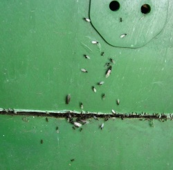
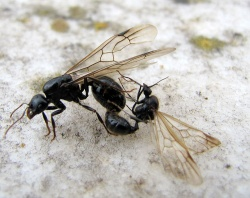

Schwarmflug

Als Schwarmflug oder Hochzeitsflug wird das Ereignis bezeichnet, an dem die zuvor geschlüpften Jungköniginnen und Männchen das Nest der Kolonie verlassen, um sich mit anderen Geschlechtstieren zu paaren. Dies geschieht unter artspezifischen Bedingungen synchron, so dass in der Regel viele Geschlechtstiere verschiedener Kolonien gleichzeitig ihr Nest zur Paarung verlassen. Durch die große Menge von Individuen wird das Risiko gefressen zu werden für einzelne Tiere verringert, da bei den Fressfeinden bald eine Sättigung erreicht ist.
Verlauf des Schwarmflugs

Ausschwärmen

Ein bevorstehender Schwarmflug kann sich bereits einige Stunden oder auch Tage vor dem eigentlichen Ereignis ankündigen; die Aussenaktivität der Arbeiterinnen scheint zuerst etwas geringer als üblich. Kurz bevor die ersten Geschlechtstiere an die Oberfläche bzw. aus dem Nest dringen, ist jedoch eine erhöhte Aktivität der Arbeiterinnen ausserhalb des Nestes festzustellen. Dabei scheinen die Arbeiterinnen ziellos und aufgeregt ausserhalb des Nestes herumzurennen. Kurz darauf kommen die ersten Geschlechtstiere an die Oberfläche. Die meist massigeren Weibchen fallen dabei besonders auf. Nach kurzer Orientierung an der Oberfläche fliegen die ersten Geschlechtstiere vom Nest ab, oft bevorzugt von erhöhten Punkten der Vegetation.
In manchen Fällen warten die abflugbereiten Geschlechtstiere tagelang am Nesteingang auf die richtigen Bedingungen. Ein plötzlicher Wetterumschwung kann wiederholt dazu führen, dass bereits aus dem Nest gelaufene Männchen und Königinnen wieder dorthin zurückkehren und auf eine bessere Gelegenheit warten.
Paarung

Meistens ist der genaue Hergang der Paarung nach dem Abflug aus dem Nest unbekannt, da die ausschwärmenden Ameisen kaum zu verfolgen sind. Von einigen Arten weiß man jedoch, dass sie landschaftlich markante "Treffpunkte" wie hohe Einzelbäume, Türme oder Berggipfel ansteuern, wo die Verpaarung in der Luft oder auch am Boden stattfindet. Beobachtet wurde dies bereits bei Lasius niger, verschiedenen Myrmica-Arten, Leptothorax acervorum, L. canadensis und einigen anderen Ameisenarten. Oft kann man auch noch am Boden kopulierende Pärchen beobachten, beispielsweise von Myrmica sp. oder Lasius sp.; hingegen konnte z. B. von Formica fusca noch keine Kopulation beobachtet werden. Über die Schwärme von Lasius niger wird berichtet, dass sie manchmal wie Rauchwolken wirken, so dass schon Feuerwehrwachen zum scheinbar brennenden Kirchturm ausgerückt sind. Solenopsis fugax bildet "Schwarmsäulen" von wenigen Metern Höhe, die vom Boden oder kleinen Sträuchern ausgehen, und im Wind leicht schwankend, längere Zeit am Ort verweilen. Die Säulen bestehen aus Männchen; Weibchen fliegen hinein, werden dort begattet und fliegen zur Koloniegründung wieder ab. Bei manchen Arten sind die weiblichen Geschlechtstiere begrenzt oder gar nicht flugfähig und locken Männchen deshalb gezielt durch Pheromone an (Harpagoxenus sublaevis, einige parasitische Leptothorax-Arten; s. Locksterzeln); dieser Paarungstyp wird in der Fachsprache Female Calling Syndrome genannt. Schließlich gibt es Arten, die bereits im Nest kopulieren, z. B. einige Myrmoxenus-Arten und Anergates atratulus.

Koloniegründung
Nach der erfolgreichen Begattung sucht die Gyne vermutlich bereits schon aus der Luft nach einem geeigneten Habitat, und kehrt zum Erdboden zurück. Dort knickt sie meist unmittelbar nach der Landung ihre Flügel an einer vorgeformten Bruchstelle ab, und beginnt mit der Suche nach einem geeigneten Gründungsnest oder gräbt selbst eine Gründungskammer. Dabei kann man im Sommer direkt nach dem Schwarmflug Ameisen in großer Zahl beobachten, wenn sie auf versiegelten Flächen umherirren und meist vergeblich Fugen zwischen Steinplatten auf ihre Eignung zur Gründung inspizieren. Dazu gibt es Ameisenarten, deren Jungköniginnen als temporäre Sozialparasiten in ein bestehendes Ameisennest eindringen und die dortigen Arbeiterinnen zur Gründung nutzen müssen, sowie Arten, deren Jungköniginnen gar keinen richtigen Schwarmflug absolvieren, sondern direkt am oder im Nest begattet und anschließend von der "Mutterkolonie" adoptiert werden.
Schwarmflüge in menschlichen Behausungen

{kind=link}
{kind=link}
Oft wird man erst durch einen Schwarmflug auf einen Ameisenbefall im Haus oder der Wohnung aufmerksam, wenn die geflügelten Königinnen und Männchen aus Bodenleisten, Steckdosen oder zwischen Türrahmen hervorkommen und sich an Fenstern sammeln. Diese Tiere interessieren sich nicht für den Inhalt der Küche; sie verschwinden von selbst, wenn man ihnen den Zugang zum Freiland ermöglicht. Desweiteren ist ggf. der Vermieter und/oder ein Kammerjäger zu informieren.
Irritationen durch Schwarmflüge
Immer wieder stößt man in der Ameisenliteratur auf die Angabe, dass Wolken schwärmender Ameisen z.B. über Kirchtürmen Feuerwehralarm auslösen können. Dokumentiert sind Irritationen, wobei Ameisenschwärme mitunter so viele Geschlechtstiere umfassen können, dass sie für Rauchwolken gehalten werden können.[1]
und:
Tholey: Fliegende Ameisen lösen Großalarm der Feuerwehr aus
Ein riesiger Schwarm fliegender Ameisen hat am Dienstag einen Großalarm bei der Feuerwehr im saarländischen Tholey ausgelöst. Besorgte Anrufer berichteten über der Antenne des neu renovierten Schaumbergturms Rauch entdeckt zu haben.[2]
Siehe auch
Einzelnachweise
Weblinks
- Video einer Gyne von Camponotus herculeanus beim Abstreifen der Flügel (youtube.com)
- Video von ausschwärmenden Lasius flavus (youtube.com)
- Video von ausschwärmenden Tetramorium (youtube.com)
- Schwarmflugtabelle diverser Ameisenarten (ameisenforum.de)
- Bilder vieler toter Männchen nach dem Massenschwarmflug einer Solenopsis-Art (en, wordpress.com)